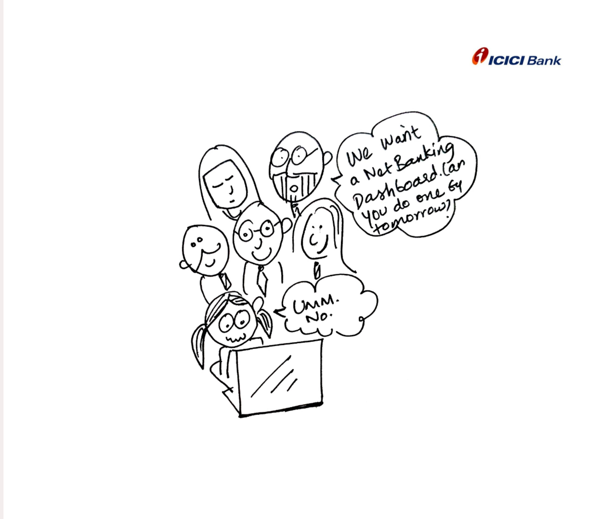
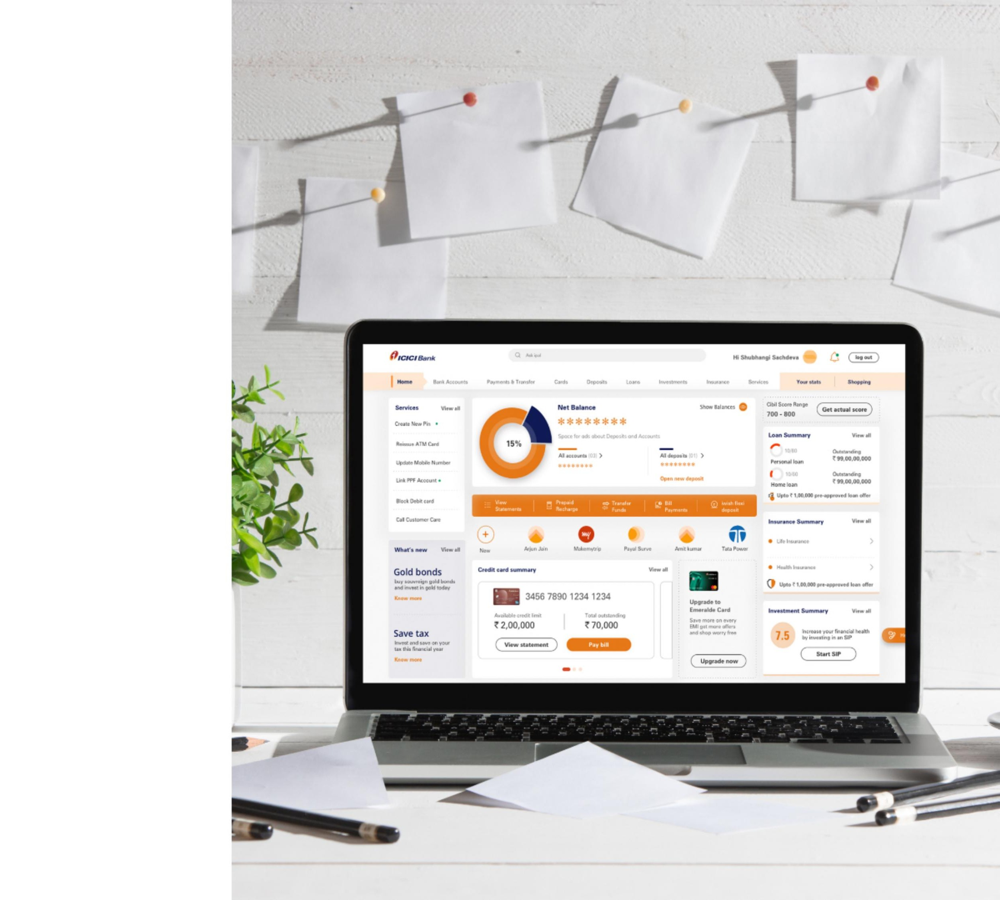
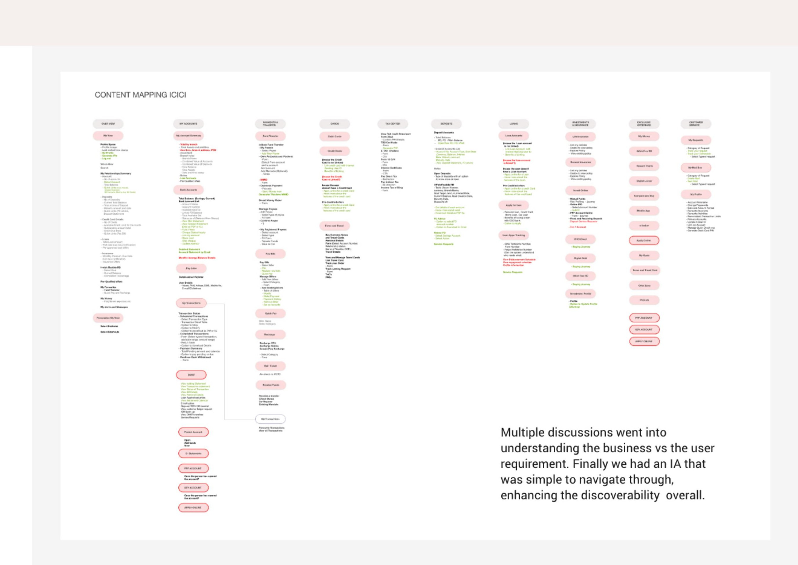
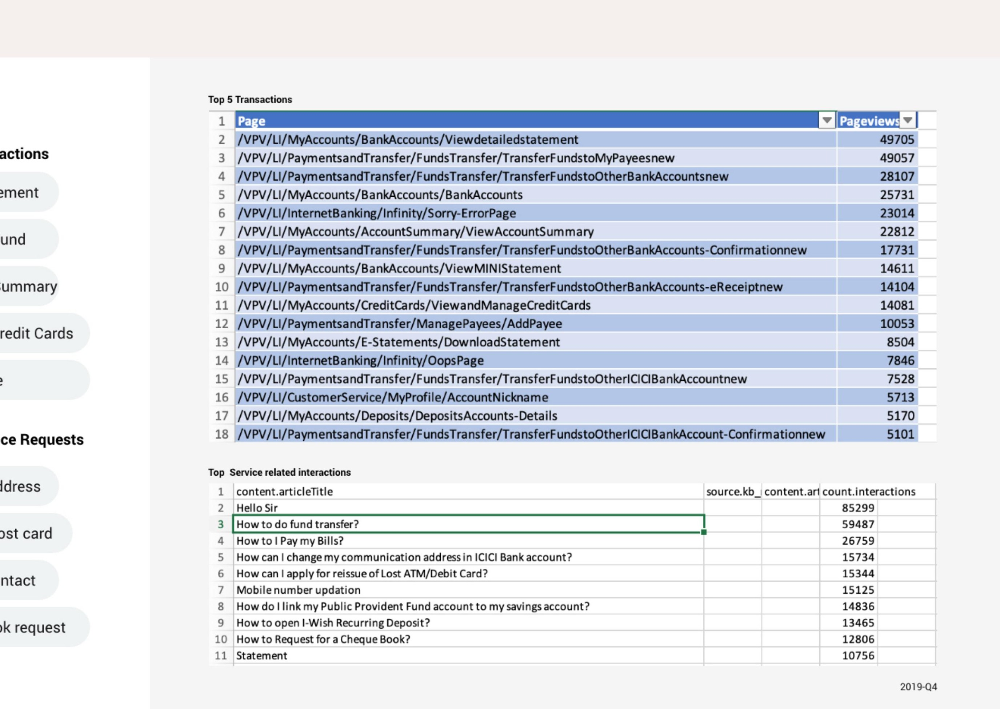
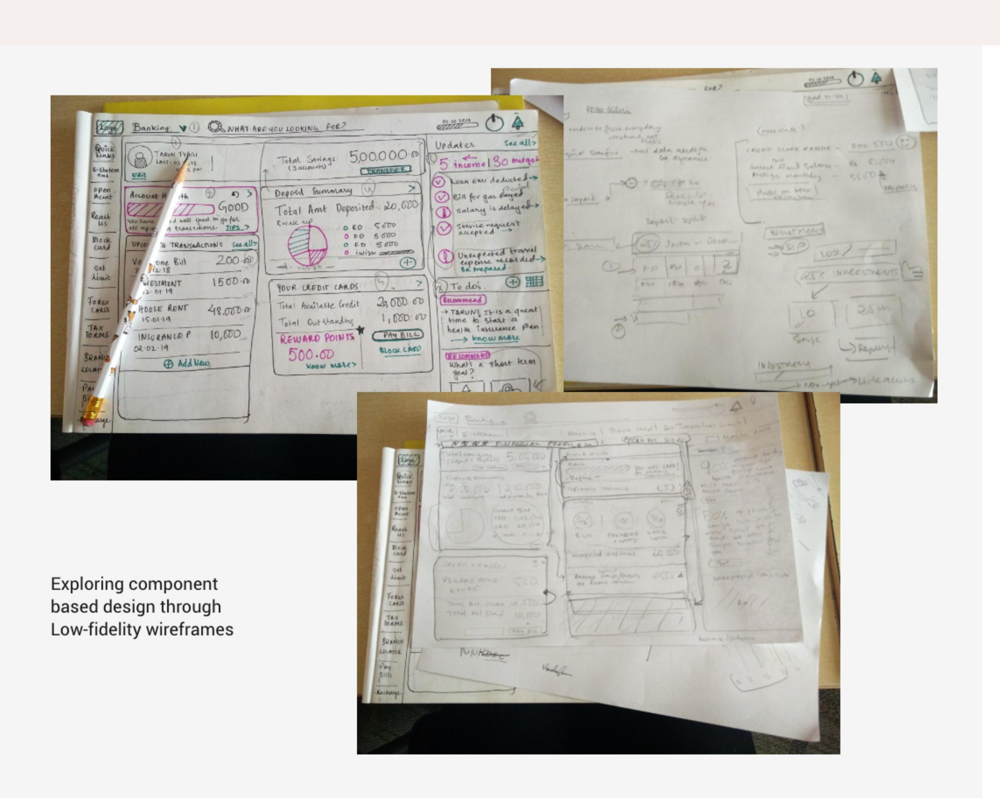
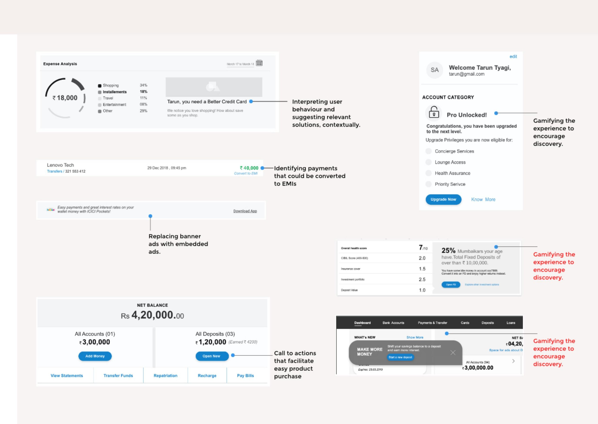
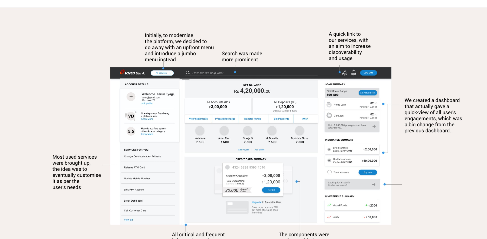
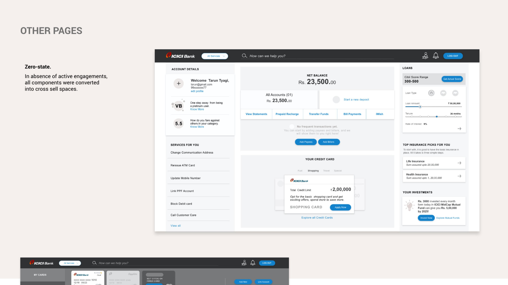
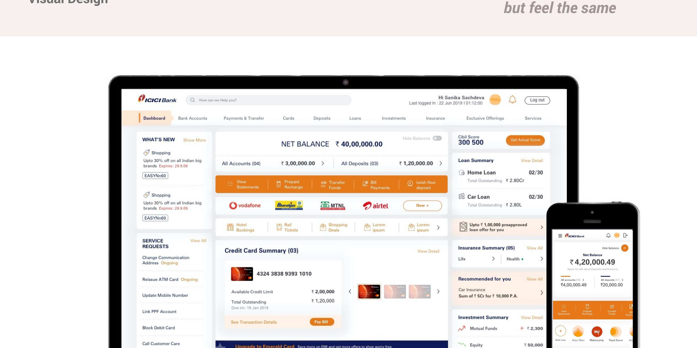

One of the biggest banks in the country wanted to redesign their net-banking portal — with me as their only UX resource.
ICICI Bank wanted to revamp its net banking portal for all customer segments, aiming to:

Dealing with a stubborn giant. Designing for a well-established, profitable corporate with a set way of doing things meant not only dealing with a lot of resistance, but also making them think design.
Too many product verticals. Account types, insurances, loans, services, deposits, funds, investments, cards — all different parts of the bank, each with their own quarterly plans and their own claim to space on the dashboard.
Effects of hierarchy. A very top-down way of working meant a lot of decisions got lost somewhere between the umpteen levels that had to sign off on approvals.
Data not being utilised. ICICI had a robust Business Intelligence unit, but that data wasn't yet being used to shape a better banking experience.
Three platforms, three experiences. The net-banking portal, the retail mobile app, and the m-site were all running independently, with slightly different user bases and very different experiences. A larger vision was needed to unify things.
A wide, loyal user-base. Users had been on the platform for years — any big change risked immediate backlash, so we had to move one careful step at a time.
Banking as a business. It was crucial to understand how a bank works and makes profit, to prioritise content from both sides — the user wants their account details, the bank is trying to push loans and insurance.
Feature monster. Pages and pages of content built over previous content, with a need to ensure every user could access everything at all times, had led to a lot of overlap and redundancy — making the site cluttered.
A no-scroll policy. Heatmaps of the previous design showed most users weren't scrolling down to see content — so proposing anything that required a scroll wasn't an option.
Getting BIU data. Understanding what platform was used for which transactions, and the top transactions on net-banking, meant extracting data that was tedious to get to, even with BIU's cooperation.
"Our users are not requesting for services through the portal."
I was told there were more than 800 pages overall on the portal. To design the primary navigation, I first had to re-create the entire information architecture, identify overlaps, and propose a new one.
Are deposits... investments? Is my account the same as my bank account? Can investments and insurance be clubbed together? Can bill payment and fund transfer be clubbed? The answers to these very basic questions translated to big efforts.

After a lot of pushing, we got data on the top 5 transactions, the most-used features, and the most-used services on the desktop net-banking portal. Data on top service-related interactions revealed that users were raising requests for fund transfers and bill payments — features that already existed on the portal. Alongside the user data, the business wanted to push transactions like bill payment and opening Fixed Deposits — essentially, any transaction that would increase dependency on the portal.

I started by identifying the important information for each component, then testing the same components for different customer segments. Even when designing the navigation, we went with a standard top and left navigation, since it wasn't only the most scalable option — it also reduced the shock of shifting for existing users.

ICICI, being the second largest bank in the country, had an unfathomable amount of user data. But it wouldn't make sense to just show available data — what was needed was interpretation of that data, to aid conversion. We also decided to do away with banner ads, so the dashboard would feel more like a personal space instead of a marketplace.

To modernise the platform, we did away with an upfront menu and introduced a jumbo menu instead. Search was made more prominent, and a quick link to services was added to increase discoverability and usage. Most-used services were brought up top, with the idea to eventually let users customise it to their needs. All critical and frequent information, actions, and transactions were given more visual weight — and every component was designed with day-zero requirements in mind, to maximise engagement for a brand new user.

We tested with 10 users — 5 existing ICICI users and 5 users of competitor platforms — across the dashboard and product landing pages, rating on familiarity, discoverability, enhancement, and recall of the cross-sell.
Key takeaways: discoverability of the new dashboard improved noticeably compared to the previous one, though users still hit friction navigating and spotting calls to action.
What that meant for design: we tightened up confidentiality cues, affordances, CTA positioning, nomenclature and copy, and the discoverability of navigation itself.


As told by the Head of Product Development, Digital Banking & Payments at ICICI, the Q4 FY20 results directly attributed to the interface revamp were:
Turn the titanic, a little at a time.
I was always very critical of the digital banking experience at conventional banks — until I found myself working for one. The sheer complexity of the organisation made me realise that even a small change was a big deal for them; it could take months to implement, but bring big returns. I became a more pragmatic designer, and understood the meaning of "doing something is better than doing nothing."